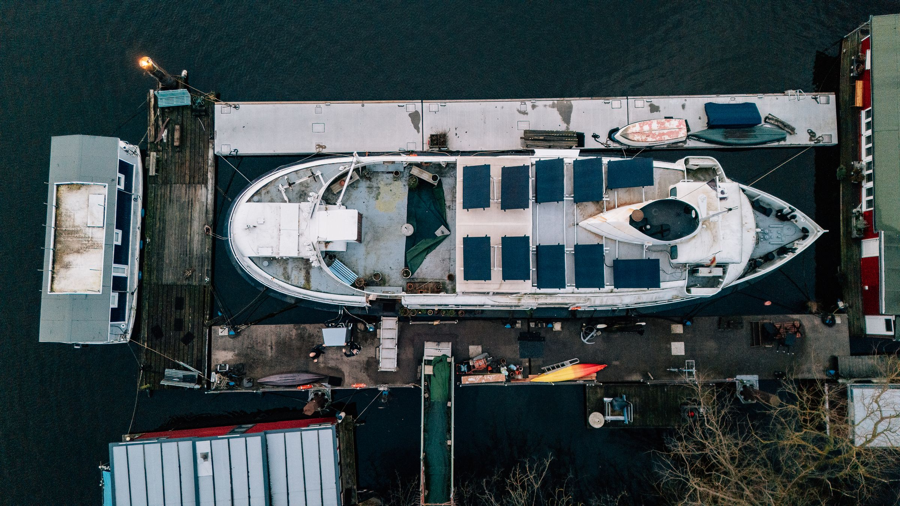

Sollen wir das Ersatzteilgeschäft in eine eigene Firma ausgründen?
- Antwort
- Nein. Aber es braucht eine eigene Preisliste und eine eigene Verantwortliche.
- Danach
- Marge im Ersatzteilgeschäft in zwei Jahren von 18 auf 31 Prozent.
Unsere These, seit 2019 unverändert
Wir helfen Inhabern, drei Dinge auszuwählen und den Rest bewusst liegen zu lassen. Zwei Leute, vier Mandate gleichzeitig, keine Folienberge.
So läuft eine Strategie-Klausur
Jeder Auftrag hat eine feste Dauer und einen Preis, den Sie vorher kennen. Danach sind wir weg, wenn Sie wollen.
Zwölf Interviews im Haus, dann zwei Tage mit Inhabern und Führungskreis. Ergebnis: drei Prioritäten für 24 Monate, auf einer Seite.
6 Wochen14.500 €Welche Produkte verdienen Geld, welche nur Umsatz. Mit Deckungsbeiträgen je Artikel und einer neuen Preisliste.
8 bis 10 Wochenab 22.000 €Was die Familie vom Unternehmen will, bevor über Nachfolge gesprochen wird. Gemeinsam mit Ihrer Kanzlei.
3 bis 6 Monateab 18.000 €Wenn aus 40 Leuten 120 geworden sind und noch alles über den Inhaber läuft.
10 Wochenab 26.000 €Ein halber Tag im Monat, ein Jahr lang. Wir fragen nach, was aus den drei Prioritäten geworden ist.
12 Monate2.400 € / MonatAlle Preise zuzüglich Umsatzsteuer, Reisekosten bis 120 km inklusive.
Fragen, mit denen Inhaber zu uns kamen, unsere Antwort und was danach geschah. Veröffentlicht mit Zustimmung, ohne Namen.
Sollen wir das Ersatzteilgeschäft in eine eigene Firma ausgründen?
Brauchen wir eine dritte Marke für jüngere Kunden?
Sollen wir einen Onlineshop für Endkunden bauen?
Wer das Erstgespräch führt, sitzt auch in der Klausur.
Zwölf Jahre Unternehmensentwicklung in einem Familienkonzern der Lebensmittelbranche, davor Volkswirtschaft in Kiel. Kümmert sich um Preise, Portfolio und um die Frage, was weg kann.
War Geschäftsführer eines Metallbaubetriebs mit 90 Leuten im Alten Land und hat ihn an die nächste Generation übergeben. Kümmert sich um Organisation und Eigentümerfragen.
Antwort innerhalb von zwei Werktagen. Das erste Gespräch kostet nichts und dauert 45 Minuten.